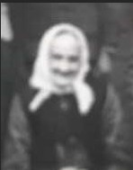

FFMM Anna Sofia Svensdotter.
Född 21 apr 1848 i Björklund, Rullerum, Ringarum (E)
Död 8 jul 1932 i Hagsätter, Halleby, Skärkind (E)
Född 30 mar 1819 i Målen, Skönberga (E)
Död 24 feb 1877 i Björklund, Rullerum, Ringarum (E)
Torpare
Född 6 feb 1781 i Vångsten, Gryt (E)
Död 1 aug 1838 i Målen, Skönberga (E)
Hemmansbrukare
Född 9 nov 1745 i Gryt (E)
Död 13 nov 1813 i Vångsten, Gryt (E)
Bonde
Sockenman
Hemmansägare
Född 11 nov 1748 i Lervik, Gryt (E)
Död 11 nov 1806 i Vångsten, Gryt (E)
Född beräknat 1704
Död 15 mar 1777 i Lervik, Gryt (E)
Sockenman
Född 20 okt 1714 i Gryt (E)
Död 27 jan 1777 i Lervik, Gryt (E)
Född beräknat 1791 i Dyhult Nergård, Dyhult, Mogata (E)
Död 23 feb 1852 i Lövsveden, Boda, Ringarum (E)
Född 8 aug 1753 i Håckenstad, Mogata (E)
Död 3 apr 1813 i Dyhult Nergård, Dyhult, Mogata (E)
Bonde
Född 1724 i Håckenstad, Mogata (E)
Död 9 jun 1770 i Dyhult, Mogata (E)
Bonde
Född 18 jun 1728 i Bresäter, Skönberga (E)

Född 4 jan 1768 i Holmtebo, Ringarum (E)
Död 25 maj 1846 i Långtorp, Långerum, Mogata (E)
Född 1 jan 1727 i Byngsbo, Ringarum (E)
Död 16 jun 1785 i Byngsbo, Ringarum (E)
Sockenman
Född 26 apr 1730 i Sörby, Ringarum (E)
Död 19 apr 1802 i Holmtebo, Ringarum (E)
Född 13 apr 1824 i Hagtorpet, Bredal, Ringarum (E)
Död 10 aug 1916 i Kårtorpet, Rullerum, Ringarum (E)
 1788-1855
Klicka på bilden för att öppna, i originalstorlek, i nytt fönster")
FFMMMF Anders Persson Fisk (Fiskmåse).
Född 1788 i Brogetorp, Skärkind (E)
Död 3 aug 1855 i Hagtorpet, Bredal, Ringarum (E)
Livgrenadjär 1807-1821
Torpare
Född 3 aug 1753 i Stohagen, Idingstad, Östra Harg (E)
Död 1 sep 1819 i Leråkra, Vadstorp, Bankekind (E)
Dräng
Vice fjärdingsman
Torpare
Född 29 nov 1728 i Ginkelösa, Vårdsberg (E)
Död 1765 i Stohagen, Idingstad, Östra Harg (E)
Torpare
Född 21 jan 1731 i Stohagen, Idingstad, Östra Harg (E)
Död 19 mar 1806 i Stohagen, Idingstad, Östra Harg (E)
Född 15 jul 1763 i Brotorp, Drängsbo, Björsäter (E)
Död 10 sep 1847 i Skärkind (E)
FFMMMFMF Peter Andersson Kallerstedt.
Född omkring 1728
Död 31 dec 1776 i Brotorp, Drängsbo, Björsäter (E)
Livgrenadjär 1757-1776
Född 13 jul 1786 i Stensveden/Stensäter, Boda, Ringarum (E)
Död 5 dec 1875 i Hagtorpet, Bredal, Ringarum (E)
Född 1 sep 1757 i Kvarntorpet, Bredal, Ringarum (E)
Död 23 jun 1814 i Skytterum, Sverkersholm, Ringarum (E)
Torpare
Född beräknat 1724
Död 17 aug 1794 i Brännkärret, Bredal, Ringarum (E)
Båtsman
Torpare
Född beräknat 1717
Död 25 jan 1796 i Kamelbo, Dal, Ringarum (E)
Född 2 dec 1758 i Björsätter, Drothem (E)
Död 19 dec 1841 i Skytterum, Sverkersholm, Ringarum (E)
Född beräknat 1728
Död 8 feb 1766 i Uppsalaängen, Drothem (E)